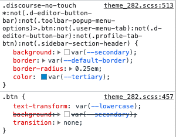

Internet blue, tight line heights, Arial x Times New Roman, marquees…I am excited to share this theme inspired by aesthetics of the brutal web and platforms such as craigslist and Wikipedia.
I tried and it was not for me — matter of taste and no biggie. But I couldn’t switch back to another theme because in my settings was one very important button missing: save
Well, I should try if it was because I changed theme from footer of the sidebar and that option was missing too. Or if it came from some component. But… I’m just now drinking my first coffee of the morning
It seems the theme button modifications is restricted to the .discourse-no-touch class which only works on non-touchscreen devices.

On touchscreen devices only the .btn custom style active which change the button background to var(--secondary) so the button color and background is same on .btn-primary as the page background and the default .btn-primary button has no border so it won’t be visible. This is happening with all .btn-primary button.
The other button types are same but the default color is different and the icon also visible so those buttons visible.
There’s no setting for that in the theme, and it doesn’t seem to change much when you change the selected color palette. So, your best way to go would be to create a new component to override the theme’s colors.
I think this theme is really cool, and I like it a lot. However, there are some minor issues. The login button is missing on the mobile version, and the category icons are not working. I really hope this theme can continue to develop.

{kind=link}
{kind=link}
{kind=link}
{kind=link}
{kind=link}